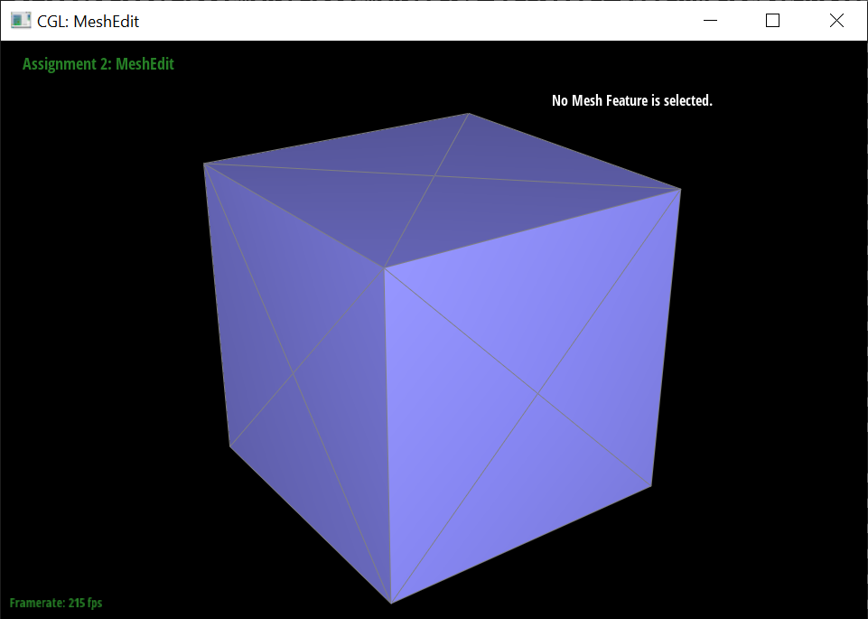
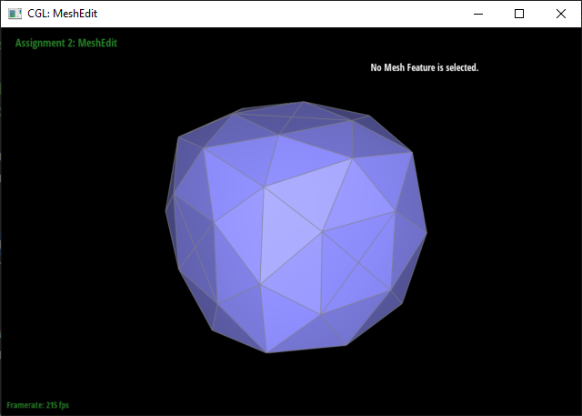

CS184/284A Spring 2025 Homework 2 Write-Up
Link to webpage: https://cal-cs184-student.github.io/hw-webpages-tripingulation-web/hw2/index.html
Link to GitHub repository: https://github.com/cal-cs184-student/sp25-hw2-tripingulation-2
Overview
In this assignment, we implemented a range of techniques related to Bezier curves, Bezier surfaces, triangle meshes, and various operations on mesh structures. This gave us a deeper understanding of computational geometry and its applications to graphics.
We first implemented the de Casteljau algorithm for evaluating Bezier curves and extended it to Bezier surfaces using a separable approach. This allowed us to create smooth, curved surfaces which are commonly used in 3D modeling.
Next, we worked with triangle meshes and the half-edge data structure to compute area-weighted vertex normals. This involved traversing the mesh structure to properly calculate normals for each vertex based on the geometry of adjacent triangles.
We also implemented several mesh manipulation operations, including edge flips and edge splits, which are important in improving mesh quality and enabling various modeling tasks.
Finally, we applied the Loop subdivision algorithm to upsample meshes, observing how the process smooths out the geometry, especially at sharp corners and edges.
Overall, this homework reinforced key concepts in 3D modeling, geometry processing, and the importance of efficient algorithms for real-time rendering and manipulation of 3D objects. It also put into perspective how complex 3D models are under the hood. It reminded me of when I attempted to follow the blender donut tutorial and made a big mess: although we often take it for granted, manipulating and adding detail to triangle meshes hides a remarkable amount of complexity.
Section I: Bezier Curves and Surfaces
Part 1: Bezier curves with 1D de Casteljau subdivision
The de Casteljau algorithm is a recursive method for evaluating Bezier curves. It works by successively linear interpolating between control points until only one point remains. This final point represents a point on the Bezier curve.
To implement the algorithm we started with the control points, then we iteratively computed new points between adjacent control points, continuing the process until we reached a single point, which gives the location on the curve for a given parameter value.
By applying this algorithm, we could evaluate Bezier curves at various parameter values, which is important for rendering smooth curves in graphics applications.
Here are some screenshots of successive levels of evaluation of a bzc file with 6 control points:
|
|
|
|
|
|
|
|
|
|
|
Part 2: Bezier surfaces with separable 1D de Casteljau
Section II: Triangle Meshes and Half-Edge Data Structure
The de Casteljau algorithm can be extended to Bezier surfaces by applying the algorithm separately in two dimensions, with an evaluation involving two stages of de Casteljau's method—one for each direction (u and v).
To evaluate a point on a Bezier surface, we first perform the de Casteljau algorithm along one direction (say, the u-direction) for each row of control points. This gives us a set of intermediate points for each row. Then, we apply the de Casteljau algorithm again on these intermediate points, but now in the v-direction. The final point we obtain is a point on the Bezier surface.
In our implementation, we followed this process and separated the evaluation into two stages, where in the first stage we computed intermediate points along the u-direction for each row, and in the second stage, we computed the final point by performing the de Casteljau algorithm along the v-direction.
bez/teapot.bez. |
Part 3: Area-weighted vertex normals
We traversed the mesh by using a pointer h that iterates over the half edges radiating from the given vertex, v.
At each step of the loop, we computed v1 as the vertex at the tip of h. Then, we advanced h
clockwise by using its twin pointer, and computed v2 as the new vertex at its tip.
To calculate area-weighted vertex normals, we noted that the magnitude of the cross product of two vectors
returns the area of a parallelogram described by them. This is exactly two times the area of the desired triangle.
Thus by calculating the cross products between an adjacent pair of edges, v1-v and v2-v, for each
triangle and then summing them up, we get the area weighting for free.
Finally we normalized the sum of the cross products to obtain the resulting normal vector.
dae/teapot.dae with flat shading. |
dae/teapot.dae with phong shading. |
Part 4: Edge flip
We implemented edge flipping by first collecting all elements (faces, edges, vertices, and halfedges) that would be involved in the flip, then reassigning the various pointers needed to complete the edge flip.
We spent a long time preparing a well-labeled diagram and carefully tabulating all the changes that needed to occur before writing the code. It did not take long to debug the only issue, which was forgetting to update faces for two of the halfedges, due to our well-organized list.

|
|
|
|
|
Part 5: Edge split
For the split operation we also created a well-labeled diagram. We followed the same helpful naming convention as for part 4, using the picture of the two triangles ACB and BCD to label vertices by letters, edges and halfedges by two letters, and faces with three letters.
After collecing all components, we created a new vertex, new edges, halfedges, and faces, and reassigned everything we needed to. We did not need to delete any elements in this step.
We encountered only two minor bugs. The first was the new vertex position not being set, which was easy to see visually and an easy one line fix. The second was that faces would sometimes disappear after two splits.
After coming up with a minimal reproducible version of the bug, we looked through all the assignments in the GUI and determined
that we had forgotten to reassign the face associated to four of the old halfedges. This was also a quick fix.
|
|
|
|
|
|
|

|
|
Part 6: Loop subdivision for mesh upsampling
Implementation & Debugging
Part 6 was the first time we had a long and eventful debugging experience. We followed the 5 step outline given, calculating locations first and storing them in the newPosition field
of vertices and edges before modifying the mesh. Steps 1, 2, 4, and 5 were done quickly, involving straightforward loops over the vertices and edges of the mesh.
After writing step 3, we realized the code was in an infinite loop in the edge splitting because of us not marking all the old edges properly.
We created a vector which stored all the old edges to iterate over instead to solve this.
We also had an issue where edges were being flipped that were not supposed to. After carefully examining the spec, we realized this was because
edges created as part of an edge split should not be tagged isNew.
Once we marked the old edges in step 3, we got a different bug where the vertex positions were not set properly: the new ones were all at the origin and we didn't properly adjust the old ones.
We realized the former was due to not setting the location for new vertices at the time of creation, and the latter was due to an error where the calculation for theconstant u was done via integer division instead of float division.
Finally we had an issue where everything looked fine for 1 or 2 subdivisions, but after several of them dimples would appear.
We fixed this by re-examining our edge split method, and making sure to reassign halfedges for every single vertex involved in the split,
even ones for which there would be no apparent change after a single split.
Effect of loop subdivision on corners and edges
After loop subdivision, smooth and gently-curved sections of the mesh retain roughly the same shape, but sharp corners and edges are smoothed out. This is due to the weighting function which acts on old vertices, nudging them towards the average position of their neighbors. This is clearly demonstrated on an icosahedron, which becomes much rounder after each subdivision, almost approaching a sphere.
|
|
|
|
|
|
This effect can be reduced around corners by pre-splitting edges in a way that creates a higher concentration of vertices around the corner, such as by splitting in a spiral shape. The below image shows an example of splitting in this way, and the result when it is applied around 3 corners of an icosahedron. The pre-processed corners retain their silhouette even after subdividing.
|
|

|
One way I attempted to reduce the smoothing around edges was by creating additional edges parallel to the original edge and lying on top of it. I did this by splitting an edge as in the first image and then flipping both edges created by the split. This is two degenerate flips as the resulting flipped edge lies exactly on the original edge. However given that degenerate flips visually disappear, I found it difficult to keep track of this process. As well, it doesn't give the best results for retaining the sharpness of an edge.
|
|
|
Asymmetry
The asymmetry occurs due to there being an edge across one diagonal of the cube, but not the other. Pre-splitting these diagonal edges results in each cube face being 4-way rotationally symmetric, after which subdivision retains the symmetry as well.
|
|

|
|
|
|